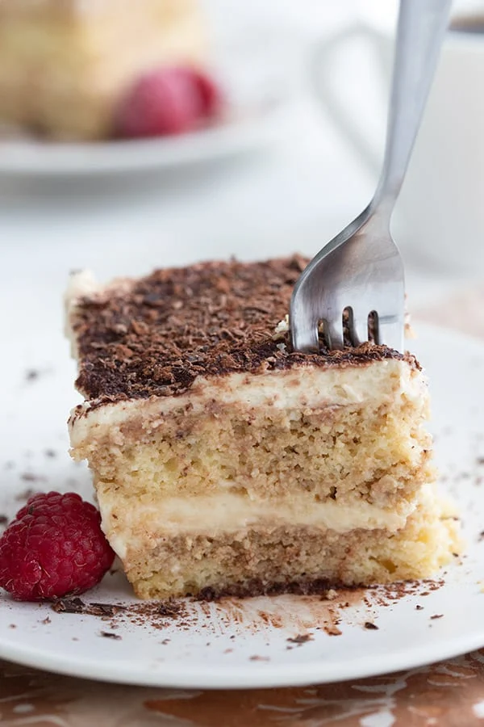

Easy and Keathy Keto Tiramisu

Description
Tiramisu is one of Italy's most famous desserts made with layers of coffee-soaked sponge cake and soft mascarpone cream. Traditional recipes can take hours, so we decided to simplify and ketofy this irresistible dessert for you. Mangiamo!
Ingredients
Sponge cake
- 4 Large eggs
- 3 1/2 oz of melted butter
- 4 1/2 oz. of erythritol
- 1 tsp of baking powder
- 5 oz. of almond flour
Mascarpone Cream
- 2 cups of heavy whipping cream
- 9 oz. of mascarpone cheese
- 4 tbsp powdered erythritol
Assembly and Serving
- 1 cup of coffee
- 4 tbsp of cocoa powder
Instructions
Sponge Cake
- Preheat the oven to 350°F (175°C). Separate the egg whites from the yolks, and place them in two separate bowls.
- Beat the egg whites until stiff with the help of an electric mixer. Reserve.
- Add the sweetener to the egg yolks and beat until the mixture turns pale yellow. Add the melted butter and the baking powder and mix. Finally, add the almond flour and mix again until well incorporated.
- Gently fold the egg whites into the mixture with a spatula, using gentle, sweeping movements.
- Grease a 9" × 13" (23 × 33cm) baking pan. You can also cover the pan with parchment paper instead of greasing. Spoon in the dough. Bake for 10 to 15 minutes.
- Let the cake cool down for 3 hours and remove it from the tray.
Mascarpone Cream
- Whip the cream until it forms soft peaks.
- In another bowl, whip the mascarpone and add the sweetener.
- Using a silicone spatula, mix the cream and the mascarpone with gentle, enveloping movements.
Assembly and Serving
- Pour the coffee into a deep bowl.
- Cut the sponge cake into strips or sticks, dip them in the coffee and form the first layer at the bottom of an 11" x 7" (27 x 18 cm) rectangular cake pan.
- Spread a layer of mascarpone cream on top.
- Then, add another layer of coffee-dipped sponge cake strips and covered it with another layer of cream.
- Decorate with the cocoa powder and let it rest in the fridge for at least 3 hours.
Return to Main Page